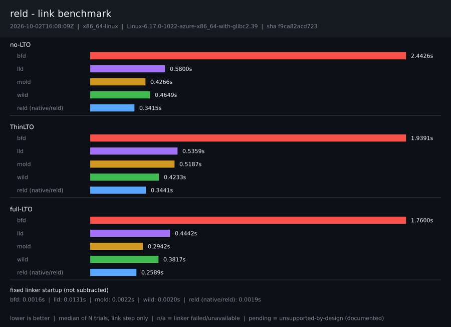

2026-10-02T16:08:09Z · x86_64-linux · Linux-6.17.0-1022-azure-x86_64-with-glibc2.39

| Configuration | bfd | lld | mold | wild | reld (native/reld) |
|---|---|---|---|---|---|
| no-LTO | 2.4426s | 0.5800s | 0.4266s | 0.4649s | 0.3415s |
| ThinLTO | 1.9391s | 0.5359s | 0.5187s | 0.4233s | 0.3441s |
| full-LTO | 1.7600s | 0.4442s | 0.2942s | 0.3817s | 0.2589s |
Reported raw and never subtracted from final-link medians.
| Series | Seconds |
|---|---|
| bfd | 0.0016s |
| lld | 0.0131s |
| mold | 0.0022s |
| wild | 0.0020s |
| reld (native/reld) | 0.0019s |